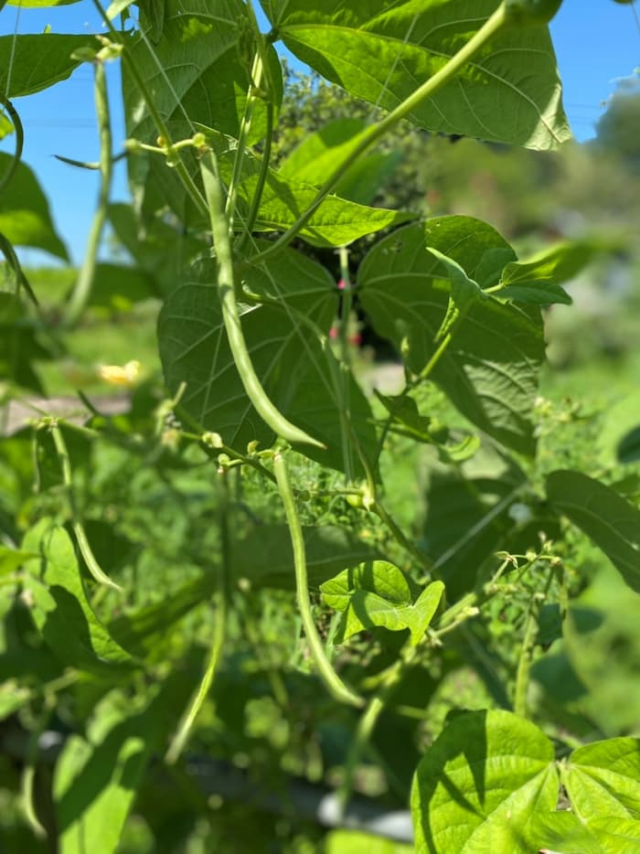
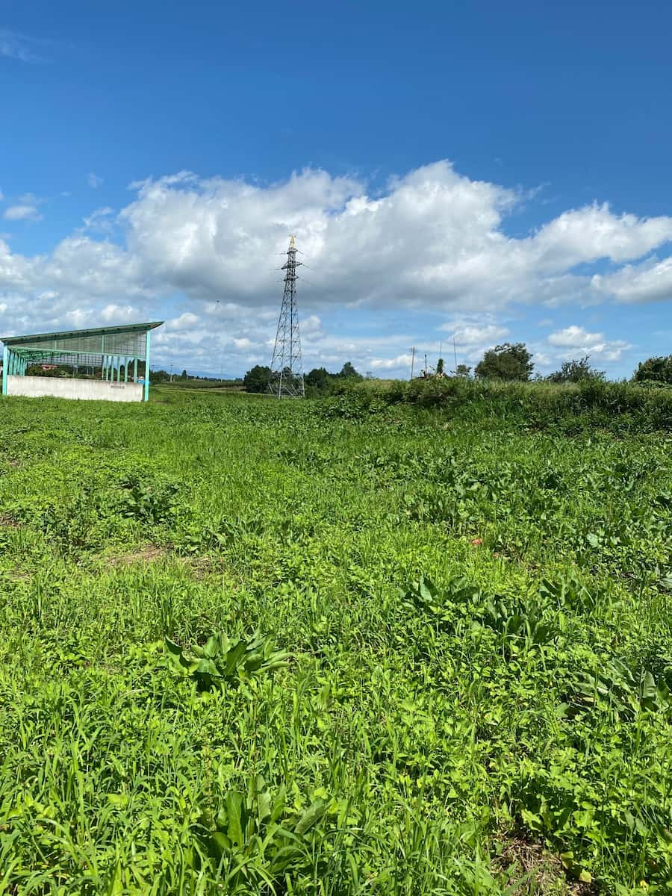
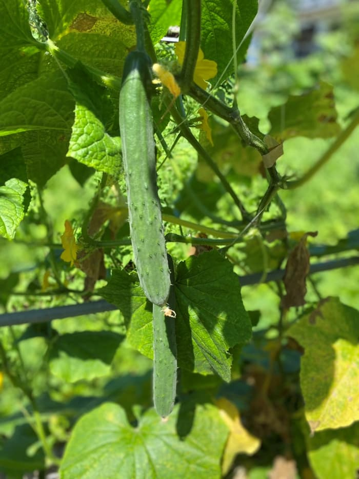
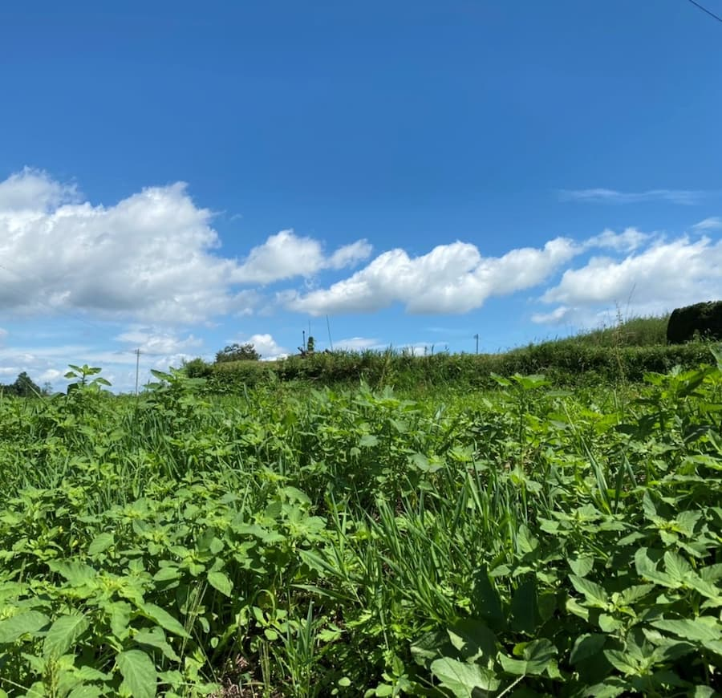

農園のこと
35年以上農薬・化学肥料を一切使っていない、先祖代々守られてきた土地で自然栽培を行っています。 自然に逆らわずに共生し、土地の力だけで育った野菜たちには、その野菜が持つ本来の味がぎゅっとつまっています。 本来のあるべき環境で育った野菜で大切な人を笑顔にしたい、そんな想いを込めて野菜づくりをしています。




自然栽培野菜の販売について
農園での直接販売のほか、ヨークベニマル須賀川南店・矢吹店にてもお買い求めいただけます。 時期によりオンラインショップ（ショップ名：101）での販売も。
オンラインショップアクセス・お問い合わせ
住所：〒962-0814 福島県須賀川市前田川字広町126-5
電話：080-5564-0615
営業時間：10:00～18:00